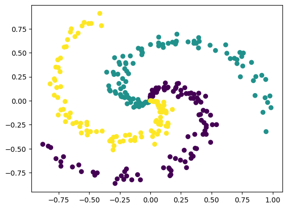

layer = Dense(5, 3)
layerDense(in_features=5, out_features=3)These layers allow use to have neurons of on layer connected to other layer without any breaks. Most widely used.
Dense (in_features:int, out_features:int)
Fully connected layer
| Type | Details | |
|---|---|---|
| in_features | int | The number of features. |
| out_features | int | The number of neurons to have for the layer. |
A layer can be created by
layer parameters can be accessed by layer.weigths and layer.biases variables
Dense.forward (X:numpy.ndarray)
Forward input X through the layer
| Type | Details | |
|---|---|---|
| X | ndarray | shape of (batch_size, in_features) if a single batch is passed it has to be of shape (1, in_features). |
| Returns | ndarray | the output of the layer |
Data can be passed through with
array([[ 8.47999191, -6.8053504 , -3.19016013]])and output can be accessed by layer.output variable after the forward pass
Artifical data generators can be usefull for quick testing and debuging purposes.
spiral_data (samples:int=100, classes:int=3, noice_fact=None)
Create a 2D spiral for each class
| Type | Default | Details | |
|---|---|---|---|
| samples | int | 100 | number of points per class |
| classes | int | 3 | number of classes |
| noice_fact | NoneType | None | add noice to the spiral angles. |
| Returns | tuple | X and y arrays’s |
This code is inspired by this course
X, y = spiral_data()
# Test for number of data points.
assert (X.shape[0] == 100 * 3) and (y.shape[0] == 100 * 3)
plt.scatter(X[:, 0], X[:, 1], c=y)
plt.show()
we can see three spirals, now increase the noice in the angles
Make data with researchai.nn.layers.spiral_data and plot it
Add some noice to spirals by increasing the noice_fact
Create a researchai.nn.layers.Dense layer and forward pass through it